Figure fig_ch01_p007_01 (Page 7) Figure fig_ch01_p007_02 (Page 7) 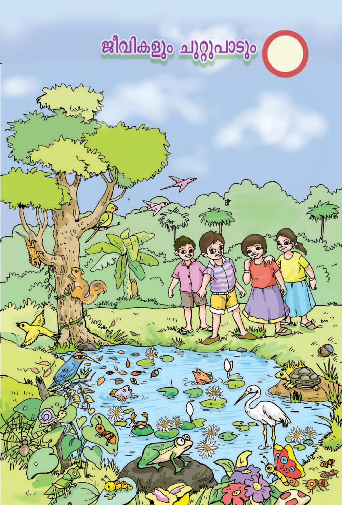
Figure fig_ch01_p007_03 (Page 7)
IV
പര〿ിസര〿പഠനം
1
20.08.2024
പര〿ിസര〿നിര〿ീ്䵌ണ⍍ിനോയ⼿ി ഞ്䴲ൾ ഇ്䵐് തിര〿ᩙ妓്䴼ടുത്
ആᩘ墚ൽᨪ⪎ുള㍁മ⹗ോണ⍍്. വയ⼿ൽവര〿ᩘ墚ിലൂᩙ妓ട യ⼿ോᩔ和ᩙ妓ചᨿᩓ厚് കുള㍁ᨪ⪎ര〿യ⼿ി
ᩙ妓ലി. കുള㍁ᨪ⪎ര〿യ⼿ിᩙ妓ല മ⹗ര〿ണ⍍ലിൽ നി്䵐ോയ⼿ിര〿ു്䵐ു നിര〿ീ്䵌ണ⍍ം.
ന്䵤 ᩙ妓തള㍁ി്䴼 ᩙ妓വ്䵦ം. ആᩘ墚ലുകൾ പൂവിᨾ㺚ുനിൽᨪ⪎ു്䵐ു.
ഏതോനും ജലസസയ്䴲ള㍁ും പോയ⼿ലും മ⹗ര〿ിൽനി്䵐് ᩙ妓കോി്䴼ു
വീണ⍍ ഇലകള㍁ും മ⹗ᩢ抎ും ᩙ妓വ്䵦ിൽ കോണ⍍ം. കുള㍁ᨪ⪎ര〿യ⼿ിൽ
പു്䵤ുകള㍁ും വ്䵦ിᩙ妓്䴴ടികള㍁ും കുᩢ抎ിᩙ妓്䴴ടികള㍁ും വള㍁ർ്䵐ുനിൽᨪ⪎ു്䵐ു.
7
7
Figure fig_ch01_p008_01 (Page 8) Figure fig_ch01_p008_02 (Page 8) 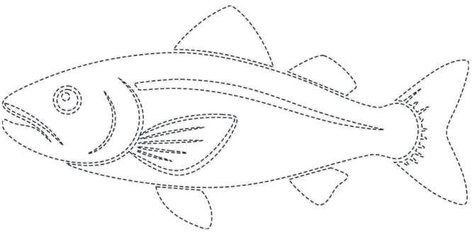
Figure fig_ch01_p008_03 (Page 8)
പര〿ിസര〿പഠനം IV
കുള㍁ᨪ⪎ര〿യ⼿ിᩙ妓ല ഞോവൽമ⹗ര〿ിൽ കിള㍁ികൾ, അ蹈ോൻ, മ⹗ര〿ᩈ䢘യ⼿ോ
驻്, ചᨿില驻ി എ്䵐ിവയ⼿ും ഉറുᩘ墚ുകൾ ഉൾᩙ妓്䵔ᩙ妓ടയ⼿ു്䵦 ᩙ妓ചᨿറു
്䵚ോണ⍍ികള㍁ുമ⹗ു്䵂്. കുള㍁ിൽ നിറᩙ妓യ⼿ മ⹗്䵜യ്䴲ള㍁ു്䵂ോയ⼿ിര〿ു്䵐ു.
അവ ഇട❙姛ിᩙ妓ട ᩙ妓വ്䵦ിനു മ⹗ുകള㍁ിൽവ്䵐് വോയ⼿്പിള㍁ർᨪ⪎ും.
തവള㍁, വോൽമ⹗ോᩅ䕏ി, ഞ്䵂്, ഒ്䴴്, നീർᩈ䢘ᨪ⪎ോലി, ജല്䵚ോണ⍍ികൾ
തുട്䴲ിയ⼿വയ⼿ോണ⍍് ആᩘ墚ൽᨪ⪎ുള㍁ിᩙ妓ല മ⹗ᩢ抎് അᩈ䢘驻വോസികൾ.
കുള㍁ിൽ ᩙ妓ചᨿറുക്䵤ുകള㍁ിᨾ㺚് ഓള㍁്䴲ള㍁ു്䵂ോᨪ⪎ി ഞ്䴲ൾ കള㍁ി്䴴ു.
കുള㍁ᨪ⪎ര〿യ⼿ിᩙ妓ല കുള㍁ിർᩜ岍യ⼿ിൽ ᩈ䢘നര〿ംᩈ䢘പോയ⼿ത് അറി്䴼ᩈ䢘തയ⼿ി്䵤.
റㅈൈനയ⽁ുടെ നിരീ്䵌ണᨪ⪎ുൈിᩔ咚് വ㔾ായ⽁ി്䴴ᩤ撘ാ.
ഏട ജ᱀ീവ㔾ികടയ⽁ാണ് കുᩈ䢌ിൽ ക്䵂്?
മരᩈ䢌ിൽ ക്䵂 ജ᱀ീവ㔾ികᩤ撘ട?
എാ ജ᱀ീവ㔾ികൾᨪ⪎ു വ㔾സ㠿ിᨪ⪎ാൻ ്䵝ല㈂ ആവ㔾്䵥യമിᩤ撘?
ജ᱀ല㈂ᩈ䢌ിൽ വ㔾സ㠿ിᨪ⪎ു്䵐 ജ᱀ീവ㔾ികൾᨪ⪎് കരയ⽁ിൽ ജ᱀ീവ㔾ിᨪ⪎ാൻ കഴ㐿ിയ⽁ുᩤ撘മാ?
എᩌ䲎ുടകാ്䵂ാണ് മ骋യ്䴲ൾᨪ⪎് കരയ⽁ിൽ വ㔾സ㠿ിᨪ⪎ാൻ കഴ㐿ിയ⽁ാᩈ䢌്?
നി്䴲ുടെ ഊഹ㤂 പൈയ⽁ൂ.
ജ᱀ല㈂ᩈ䢌ിൽ വ㔾സ㠿ിᨪ⪎ാൻ മ骋യടᩈ䢌 സ㠿ഹ㤂ായ⽁ിᨪ⪎ു്䵐 എടᩌ䲎 സ㠿വ㔾ിᩤ撘്䵥
ഷകൾ നി്䴲ൾ നിരീ്䵌ി്䴴ിᨾ㺎ു്䵂്?
ഒരു മ骋യᩈ䢌ിട ചᨿിᩔ呏 വ㔾ര്䴴ുᩤ撘നാᨪ⪎ൂ.
മ骋യᩈ䢌ിട ആകᕃി എ്䴲ടനയ⽁ു്䵦ാണ്?
ജ᱀ല㈂ᩈ䢌ില㈂ൂടെയ⽁ു്䵦 സ㠿ᨸ㢋ാരᩈ䢌ിന് ഈ ആകᕃി എ്䴲ടന സ㠿ഹ㤂ായ⽁ിᨪ⪎ു്䵐ു?
8
Figure fig_ch01_p009_01 (Page 9) Figure fig_ch01_p009_02 (Page 9) Figure fig_ch01_p009_03 (Page 9) 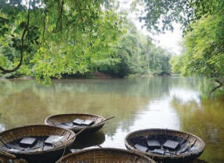
Figure fig_ch01_p009_04 (Page 9)
IV
പര〿ിസര〿പഠനം
വ㔾ᨸ㢋ികുടെ ആകᕃി നിരീ്䵌ിᨪ⪎ൂ.
ജ᱀ല㈂ᩈ䢌ില㈂ൂടെ സ㠿ᨸ㢋രിᨪ⪎ു്䵐ിന് ഇിൽ ഏ് ആകᕃിയ⽁ാണ് കൂെുൽ
അനുᩤ撘യ⽁ാജ᱀യ?
മ骋യ്䴲ൾ സ㠿ᨸ㢋രിᨪ⪎ു്䵐് നി്䴲ൾ ്䵦ᩍ䶌ി്䴴ിᨾ㺎ുᩤ撘്䵂ാ?
അവ㔾 സ㠿ᨸ㢋ാരദ☿ി്䵥 മാᩢ抎ു്䵐് എ്䴲ടനയ⽁ാണ്?
അവ㔾യ⽁ുടെ ടചᨿു്䵘ല㈂ുകൾ എ്䴲ടനയ⽁ാണ് ്䵅മീകരി്䴴ിരിᨪ⪎ു്䵐്?
മ骋യ്䴲ൾᨪ⪎് ്䵥വസ㠿ിᨪ⪎ാൻ സ㠿ഹ㤂ായ⽁കമായ⽁ ്䵥രീരഭⴾാഗᜂ ഏ്?
ജ᱀ല㈂ᩈ䢌ിൽ ജ᱀ീവ㔾ിᨪ⪎ാൻ സ㠿ഹ㤂ായ⽁ിᨪ⪎ു്䵐 എടᩌ䲎 സ㠿വ㔾ിᩤ撘്䵥ഷകാണ്
മ骋യ്䴲ൾᨪ⪎ു്䵦്?
ശര〿ീര〿ിᩙ妓 ആകᕃതി, ചᨿിറകുകൾ, വോൽ്䴴ിറക്, ᩙ妓ചᨿതു
ᩘ墚ലുകള㍁ുᩙ妓ട ᩅ䕏മ⹗ീകര〿ണ⍍ം, വുവു്䵔് എ്䵐ിവ ജലി
ലൂᩙ妓ട സᨸ㢌ര〿ിᨪ⪎ു്䵐തിന് മ⹗്䵜യ്䴲ᩙ妓ള㍁ സഹ㤾ോയ⼿ിᨪ⪎ു്䵐ു.
ᩙ妓ചᨿകിള㍁്䵔ൂᨪ⪎ള㍁ുᩙ妓ട സഹ㤾ോയ⼿ᩈ䢘ോᩙ妓ടയ⼿ോണ⍍് മ⹗്䵜യ്䴲ൾ
ശവസിᨪ⪎ു്䵐ത്.
മ骋യ്䴲ുടെ വ㔾ിവ㔾ിധ സ㠿വ㔾ിᩤ撘്䵥ഷകൾ മനᩰ炌ില㈂ാᨪ⪎ിയ⽁ᩤ撘ാ. ഇനി സ㠿വ㔾ി
ᩤ撘്䵥ഷയ⽁ു്䵦 ചᨿില㈂ സ㠿സ㠿യ്䴲ട പരിചᨿയ⽁ടᩔ咚െ.
9
Figure fig_ch01_p010_01 (Page 10) Figure fig_ch01_p010_02 (Page 10) 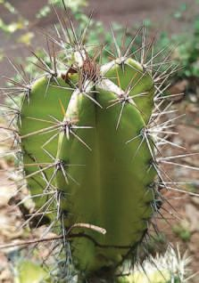
Figure fig_ch01_p010_03 (Page 10) 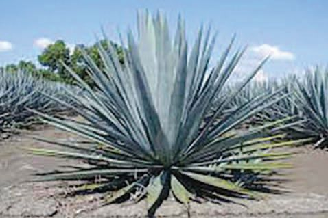
Figure fig_ch01_p010_04 (Page 10) Figure fig_ch01_p010_05 (Page 10)
പര〿ിസര〿പഠനം IV
ചᨿിᩔ和്䴲ൾ നിര〿ീ്䵌ിᨪ⪎ൂ.
ഈ സ㠿സ㠿യ്䴲ുടെ ്䵚ᩤ撘യകകൾ എടᩌ䲎ാടᨪ⪎യ⽁ാണ്?
്䵂ിട ്䵚ᩤ撘യക എᩌ䲎ാണ്?
മᩢ抎ു ടചᨿെികിൽനി്䵐് വ㔾യയ്䵜മായ⽁ി എടᩌ䲎 ്䵚ᩤ撘യകകാണ്
ഇവ㔾❙姛ു്䵦്? ചᨿർ്䴴ടചᨿᩓ厚് എᩙ妓 പര〿ിസര〿പഠനപു്䵜കിൽ എഴ㐿ുൂ.
മ⹗ര〿ുഭⴾൂമ⹗ിയ⼿ിᩙ妓ല സസയ്䴲ൾ (മ⹗ര〿ുര〿ൂഹ㤾്䴲ൾ)
മ⹗ര〿ുഭⴾൂമ⹗ിയ⼿ിᩙ妓ല സസയ്䴲ൾ ഇലയ⼿ി്䵤ോᩈ䢘തോ ᩙ妓ചᨿറിയ⼿ ഇലക
ള㍁ു്䵦ᩈ䢘തോ മ⹗ു്䵦ുകള㍁ു്䵦ᩈ䢘തോ ആകം. അവയ⼿ുᩙ妓ട ത്䵂ുകൾ
കനമ⹗ു്䵦വയ⼿ും പ്䴴നിറമ⹗ു്䵦വയ⼿ും ജലം സംഭⴾര〿ി്䴴ു വ❙姛ോൻ
കിയ⼿ു്䵐വയ⼿ുമ⹗ോണ⍍്. ത്䵂ുകള㍁ിൽ ᩙ妓മ⹗ുകുᩈ䢘പോᩙ妓ലയ⼿ു്䵦 ഒര〿ു
ആവര〿ണ⍍മ⹗ു്䵂്. ഈ ആവര〿ണ⍍ം ജലനᩖ噏ം തടയ⼿ോൻ അവᩙ妓യ⼿
സഹ㤾ോയ⼿ിᨪ⪎ു്䵐ു. മ⹗蹈ിᩈ䢘ലᨪ⪎് വള㍁ᩙ妓ര〿യ⼿ധ✂ികം തോ്䵐ിറ്䴲ോൻ
കിവു്䵦 അവയ⼿ുᩙ妓ട ᩈ䢘വര〿ുകൾ ആിൽനി്䵐ുᩈ䢘പോലും
ജലം വലിᩙ妓്䴴ടുᨪ⪎ും. മ⹗ര〿ുഭⴾൂമ⹗ിയ⼿ിᩙ妓ല സസയ്䴲ൾ മ⹗ര〿ുര〿ൂഹ㤾്䴲ൾ
(Xerophytes) എ്䵐ോണ⍍് അറിയ⼿ᩙ妓്䵔ടു്䵐ത്. ᩈ䢘മ⹗ൽസൂചᨿി്䵔ി്䴴
സവിᩈ䢘ശഷതകᩙ妓ള㍁്䵤ം മ⹗ര〿ുഭⴾൂമ⹗ിയ⼿ിൽ വസിᨪ⪎ു്䵐തിന് അവᩙ妓യ⼿
്䵚ോ്䵎മ⹗ോᨪ⪎ു്䵐ു.
അനുകൂലനം (Adaptation)
സസയ്䴲ൾᨪ⪎ും ജ驻ുᨪ⪎ൾᨪ⪎ും അവ ജീവിᨪ⪎ു്䵐 ചᨿുᩢ抎ുപോടിന്
അനുᩈ䢘യ⼿ോജയമ⹗ോയ⼿ ശോര〿ീര〿ികസവിᩈ䢘ശഷതകള㍁ു്䵂്. ഒര〿ു ജീവിᨪ⪎്
അതിᩙ妓 വോസᩝ嶋ല് ജീവിᨪ⪎ു്䵐തിന് സഹ㤾ോയ⼿കമ⹗ോയ⼿ ശോര〿ീ
ര〿ികസവിᩈ䢘ശഷതയ⼿ോണ⍍് അനുകൂലനം.
10
Figure fig_ch01_p011_01 (Page 11) Figure fig_ch01_p011_02 (Page 11) Figure fig_ch01_p011_03 (Page 11) 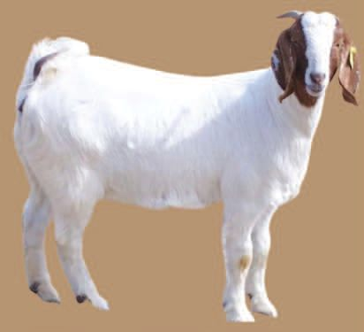
Figure fig_ch01_p011_04 (Page 11) 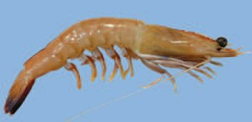
Figure fig_ch01_p011_05 (Page 11) 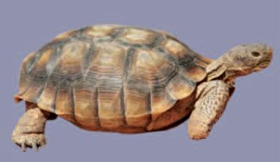
Figure fig_ch01_p011_06 (Page 11)
IV
തᩂ䊎ുകള㌿ില㉆
വ㔾ായ⽁ു അറകള㌿ുല㉆െ
സഹ㤾ായ⽁ᩈ䢘ാല㉆െ
യ⽁ാണ⍍് ഞ്䴲ൾ
ല㉆വ㔾്䵦ിൽ
ല㉆ാ്䴲ി
ന⠿ിൽᨪ⪎ു്䵐ത്.
പര〿ിസര〿പഠനം
വ㔾ിരുകൾ
തᩜ岌ിൽ ചർᩜ岌ാൽ
ബᩏ侌ിᨴ㒌ിരിᨪ⪎ു
്䵐തുമ⹂ൂം
ല㉆വ㔾്䵦ിൂല㉆െ
ന⠿ീᩌ䲋ാൻ
ഞ്䴲ൾᨪ⪎്
കഴ㐿ിയ⽁ും.
ആ്䵘ല㈂ു വ㔾യ⽁ു ᩜ岌ില㈂ു്䵦 സ㠿ഭⴾാഷണ ്䵦ᩍ䶌ി്䴴ᩤ撘ാ.
അവ㔾യ⽁ുടെ കൂെുൽ അനുകൂല㈂ന്䴲ൾ ചᨿർ്䴴ടചᨿടᩓ厚ഴ㐿ുൂ.
ആᩘ墚ൽ
തവള㍁
y
y
y
y
ചᨿിᩔ和്䴲ൾ നിര〿ീ്䵌ിᨪ⪎ൂ.
ചᨿിᩔ呏ᩈ䢌ിടല㈂ ജ᱀ീവ㔾ികൾ എവ㔾ിടൊമാണ് വ㔾സ㠿ിᨪ⪎ു്䵐്?
11
Figure fig_ch01_p012_01 (Page 12) Figure fig_ch01_p012_02 (Page 12) Figure fig_ch01_p012_03 (Page 12) 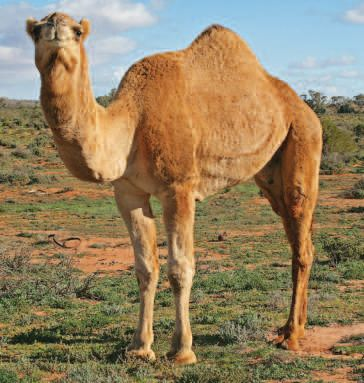
Figure fig_ch01_p012_04 (Page 12)
പര〿ിസര〿പഠനം IV
നി്䴲ൾᨪ⪎് പരിചᨿിമായ⽁ മᩢ抎ു ജ᱀ീവ㔾ികുടെ ᩤ撘പരുകടഴ㐿ുി പᨾ㺎ിക പൂർ
ᩈ䢌ിയ⽁ാᨪ⪎ൂ.
കര〿യ⼿ിൽ
ജീവിᨪ⪎ു്䵐വ
ᩙ妓വ്䵦ിൽ
ജീവിᨪ⪎ു്䵐വ
കര〿യ⼿ിലും ᩙ妓വ്䵦ിലും
ജീവിᨪ⪎ു്䵐വ
പൂർᩈ䢌ിയ⽁ാᨪ⪎ിയ⽁ പᨾ㺎ികയ⽁ിടല㈂ വ㔾ിവ㔾ര്䴲ൾ വ㔾ി്䵥കല㈂ന ടചᨿᩓ厚് നിഗᜂമന
്䴲ൾ എᩙ妓 പര〿ിസര〿പഠനപു്䵜കിൽ ᩤ撘രഖടᩔ咚െുᩈ䢌ൂ.
മരുഭⴾൂമിയ⽁ില㈂ു ᩗ垎ുവ㔾്䵚ᩤ撘ദ☿്䵥്䴲ില㈂ു ജ᱀ീവ㔾ികൾ വ㔾സ㠿ിᨪ⪎ു്䵐ു്䵂ᩤ撘ാ!
എടᩌ䲎 അനുകൂല㈂ന്䴲ാണ് അവ㔾❙姛ു്䵦്?
മ⹂രുഭⵂൂമ⹂ിയ⽁ിൽ
ദ☿ിവ㔾സ്䴲ᩈ䢘ള㌿ാള㌿ം ല㉆വ㔾്䵦ം
കുെിᨪ⪎ാല㉆ത ജ᱀ീവ㔾ിᨪ⪎ാൻ
ഞ്䴲ല㉆ള㌿ സഹ㤾ായ⽁ി
ᨪ⪎ു്䵐ത് മ⹂ുതുകില㉆
ല㉆കാഴ㐿ുᩔ咋ാണ⍍്.
12
തവᨪ⪎ിന⠿െിയ⽁ില㉆
ല㉆കാഴ㐿ുᩔ咋ാണ⍍്
ᩗ垎ുവ㔾്䵚ᩈ䢘ദ☿ശല㉆
അതിശ㙈ശതയിൽ
ന⠿ി്䵐് ഞ്䴲ല㉆ള㌿
സംരᩌ䲌ിᨪ⪎ു്䵐ത്.
Figure fig_ch01_p013_01 (Page 13) Figure fig_ch01_p013_02 (Page 13) Figure fig_ch01_p013_03 (Page 13) Figure fig_ch01_p013_04 (Page 13)
IV
പര〿ിസര〿പഠനം
ഒᨾ㺎കᩈ䢌ിനു ടപൻഗᜂവിനുമു്䵦 മᩢ抎് അനുകൂല㈂ന്䴲ൾ കട്䵂ᩈ䢌ി ചᨿർ്䴴
ടചᨿᩓ厚ു പᨾ㺎ികയ⽁ിടല㈂ഴ㐿ുൂ.
ഒᨾ㺚കം
ᩙ妓പൻഗവിൻ
y
y
y
y
y
y
ᩙ妓വ്䵦ം കുടിᨪ⪎ോᩙ妓തയ⼿ും ഒര〿ു ജീവിതം
കംഗോര〿ു എലി
മ⹗ര〿ുഭⴾൂമ⹗ിയ⼿ിൽ കോണ⍍
ᩙ妓്䵔ടു്䵐 ഒര〿ു ᩙ妓ചᨿറിയ⼿
ജീവിയ⼿ോണ⍍് കംഗോര〿ു
എലി. മ⹗ര〿ുഭⴾൂമ⹗ിയ⼿ിൽ
ജീവിᨪ⪎ു്䵐തിനു്䵦
നിര〿വധ✂ി അനുകൂല
ന്䴲ൾ
ഇതിനു്䵂്.
പകൽസമ⹗യ⼿ᩙ妓 ചᨿൂട്
അതിജീവിᨪ⪎ു്䵐തിന്
വള㍁ᩙ妓ര〿 ആിൽ മ⹗ോള㍁്䴲ള㍁ു്䵂ോᨪ⪎ി അതിനു്䵦ിൽ ജീവി
ᨪ⪎ു്䵐ു. ര〿ോᩔ和ികോല്䴲ള㍁ിലോണ⍍് ഇര〿ᩈ䢘തടു്䵐ത്. ഒᨾ㺚ുംതᩙ妓്䵐 ᩙ妓വ്䵦ം
കുടിᨪ⪎ോᩙ妓ത ജീവിᨪ⪎ോൻ ഇവ❙姛് കിയ⼿ും. ്䵚ധ✂ോന ആഹ㤾ോര〿മ⹗ോയ⼿
ധ✂ോനയ്䴲ള㍁ിൽനി്䵐ും വിുകള㍁ിൽനി്䵐ും ശര〿ീര〿ിᩙ妓ല ᩙ妓കോു
്䵔ിൽനി്䵐ും ഇവ❙姛് ആവശയമ⹗ോയ⼿ ജലം ലഭⴾിᨪ⪎ു്䵐ു. വിയ⼿ർ്䵔ി
ലൂᩙ妓ടയ⼿ും മ⹗ൂᩔ和ിലൂᩙ妓ടയ⼿ുമ⹗ു്䵦 ജലനᩖ噏ം വള㍁ᩙ妓ര〿 കുറവോണ⍍്.
നീള㍁ം കൂടിയ⼿ പിൻകോലുകൾ ഉപᩈ䢘യ⼿ോഗി്䴴് കംഗോര〿ുവിᩙ妓നᩈ䢘്䵔ോ
ᩙ妓ല ചᨿോടി്䴴ോടിയ⼿ോണ⍍് സᨸ㢌ര〿ിᨪ⪎ു്䵐ത്. കവിൾഭⴾോഗു്䵦 സᨸ㢌ി
യ⼿ിൽ ധ✂ോനയ്䴲ള㍁ും വിുകള㍁ും ᩈ䢘ശഖര〿ി്䴴ുവ❙姛ോനും കിയ⼿ും.
13
Figure fig_ch01_p014_01 (Page 14) Figure fig_ch01_p014_02 (Page 14) 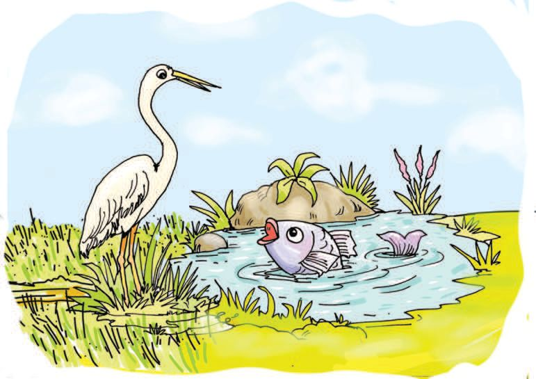
Figure fig_ch01_p014_03 (Page 14)
പര〿ിസര〿പഠനം IV
ഞ്䴲ൾᨪ⪎്
ജ᱀ീവ㔾ിᨪ⪎ാൻ
ആവ㔾ശയമ⹂ായ⽁
ല㉆ത警 വ㔾യ⽁ി
ുᩂ䊎്.
ഞ്䴲ൾᨪ⪎്
ᩈ䢘വ㔾ᩂ䊎ല㉆ത警
കുള㌿ിു
ᩂ䊎ᩈ䢘警ാ !
ടകാᨪ⪎ിന് വ㔾യ⽁ല㈂ിൽനി്䵐് എടᩌ䲎ാമാണ് ല㈂ഭⴾിᨪ⪎ു്䵐്?
ടചᨿൈുജ᱀ീവ㔾ികൾ
മ骋യᩈ䢌ിന് കുᩈ䢌ിൽനി്䵐് എടᩌ䲎 ല㈂ഭⴾിᨪ⪎ു?
വ㔾ാസ㠿്䵝ല㈂
ഒര〿ു ജീവി വസിᨪ⪎ു്䵐 ചᨿുᩢ抎ുപോടോണ⍍് അതിᩙ妓 വോസᩝ嶋ലം
അഥവോ ആവോസം (Habitat). ജീവിയ⼿ുᩙ妓ട നിലനിᩜ岌ിന് ആവശയ
മ⹗ോയ⼿ എ്䵤ോ ടക്䴲ള㍁ും ആവോസിലു്䵂്. കുള㍁ം, പു, വയ⼿ൽ
എ്䵐ിവ ആവോസ്䴲ൾᨪ⪎് ഉദ☿ോഹ㤾ര〿ണ⍍്䴲ള㍁ോണ⍍്.
ആവ㔾ാസ㠿്䴲ൾᨪ⪎് കൂെുൽ ഉദ☿ാഹ㤂രണ്䴲ൾ ചᨿർ്䴴ടചᨿᩓ厚് കട്䵂ᩈ䢌ിടയ⽁
ഴ㐿ുൂ.
14
Figure fig_ch01_p015_01 (Page 15) Figure fig_ch01_p015_02 (Page 15) 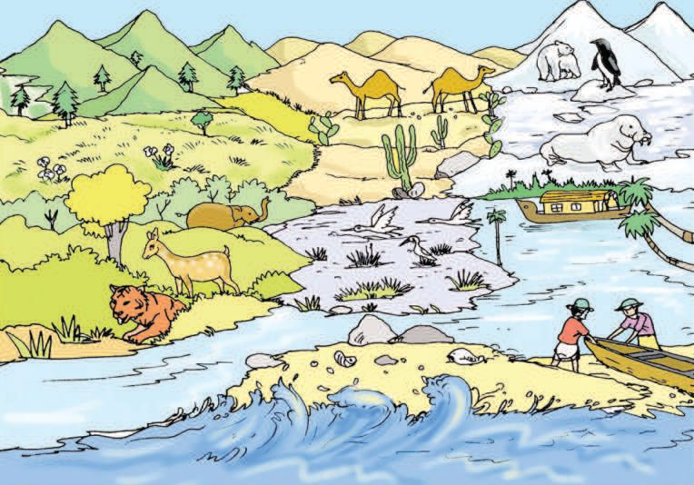
Figure fig_ch01_p015_03 (Page 15)
IV
പര〿ിസര〿പഠനം
വ㕃്䵌
വിവിധ✂തര〿ം ആവോസ്䴲ൾ
ചᨿിᩔ和ം നിര〿ീ്䵌ിᨪ⪎ൂ.
ചᨿിᩔ呏ᩈ䢌ിൽ കാണു്䵐 വ㔾ിവ㔾ിധര ആവ㔾ാസ㠿്䴲ൾ ഏട? ᩤ撘പരുകൾ
എഴ㐿ുിᩤ撘നാᨪ⪎ൂ.
വ㔾യ⽁ൽ ഒരു ആവ㔾ാസ㠿മാണᩤ撘ാ. അിൽ ജ᱀ീവ㔾നു്䵦ു ജ᱀ീവ㔾നിാᩈ䢌ു
മായ⽁ നിരവ㔾ധി ഘെക്䴲ു്䵂്. ഏടാമാണവ㔾? ചᨿർ്䴴ടചᨿടᩓ厚ഴ㐿ുൂ.
ജീവനു്䵦വ
y സ㠿സ㠿യ്䴲ൾ
y
y
ജീവനി്䵤ോവ
y മᩆ䚚്
y
y
്䵚കᕃിദ☿ᩈ䢌മായ⽁ ആവ㔾ാസ㠿്䴲ു മനുഷയനിർᩜ岌ിമായ⽁ ആവ㔾ാസ㠿്䴲ു
മു്䵂്. വ㔾ന ്䵚കᕃിദ☿ᩈ䢌 ആവ㔾ാസ㠿ᩈ䢌ിന് ഉദ☿ാഹ㤂രണമാണ്. സ്കൂള㍁ിᩙ妓ല
വ㕈ജവവ㕈വവിധ✂യ ഉദ☿യോനᩈ䢘മ⹗ോ?
15
Figure fig_ch01_p016_01 (Page 16) Figure fig_ch01_p016_02 (Page 16) Figure fig_ch01_p016_03 (Page 16)
പര〿ിസര〿പഠനം IV
്䵚കᕃിദ☿ᩈ䢌 ആവ㔾ാസ㠿്䴲ൾᨪ⪎ു മനുഷയനിർᩜ岌ി
കൂെുൽ ഉദ☿ാഹ㤂രണ്䴲ൾ കട്䵂ᩈ䢌ിടയ⽁ഴ㐿ുൂ.
്䵚കᕃതിദ☿ ആവോസ്䴲ൾ
y
y
y
ആവ㔾ാസ㠿്䴲ൾᨪ⪎ു
മ⹗നുഷയനിർᩜ岍ിത ആവോസ്䴲ൾ
y
y
y
ഒര〿ു ആവോസിൽ ജീവനു്䵦തും ജീവനി്䵤ോതുമ⹗ോയ⼿ നിര〿വധ✂ി
ടക്䴲ള㍁ു്䵂്. സസയ്䴲ൾ, ജ驻ുᨪ⪎ൾ, സൂ്䵌്മ⹗ജീവികൾ എ്䵐ിവ
ജീവനു്䵦 ടക്䴲ൾᨪ⪎് ഉദ☿ോഹ㤾ര〿ണ⍍്䴲ള㍁ോണ⍍്. മ⹗蹈്, വോയ⼿ു, ജലം,
സൂര〿യ്䵚കോശം തുട്䴲ിയ⼿വയ⼿ോണ⍍് ജീവനി്䵤ോ ടക്䴲ള㍁ിൽ
്䵚ധ✂ോനᩙ妓്䵔ᨾ㺚വ.
വ㔾ായ⽁ു, ജ᱀ല㈂, മᩆ䚚്, സ㠿ൂരയ്䵚കാ്䵥 ുെ്䴲ിയ⽁ ജ᱀ീവ㔾നിാᩈ䢌 ഘെക്䴲ട
ജ᱀ീവ㔾ികൾ ആ്䵦യ⽁ിᨪ⪎ു്䵐ിᩤ撘? ഇുᩤ撘പാടല㈂ ജ᱀ീവ㔾ികൾ പര്䵢ര ആ്䵦
യ⽁ിᨪ⪎ു്䵐ുമു്䵂്. ഒരു ്䵚ᩤ撘ദ☿്䵥ᩈ䢌് ജ᱀ീവ㔾നു്䵦 ഘെക്䴲ു ജ᱀ീവ㔾നിാᩈ䢌
ഘെക്䴲ു പര്䵢രാ്䵦യ⽁വᩈ䢌ിൽ കഴ㐿ിയ⽁ു്䵐ു.
ചᨿിᩔ和ം നീര〿ീ്䵌ിᨪ⪎ൂ.
ആര് ആടരടയ⽁ ആ്䵦യ⽁ിᨪ⪎ു്䵐ു? വ㔾ര്䴴ുᩤ撘യ⽁ാജ᱀ിᩔ咚ി്䴴് കുൈിᩔ咚് ᩞ庋ാ
ൈാᨪ⪎ൂ.
16
Figure fig_ch01_p017_01 (Page 17) Figure fig_ch01_p017_02 (Page 17) Figure fig_ch01_p017_03 (Page 17)
IV
പര〿ിസര〿പഠനം
ആവോസവയവᩝ嶋 (Ecosystem)
ജീവനു്䵦 ടക്䴲ള㍁ും ജീവനി്䵤ോ ടക്䴲ള㍁ും പര〿്䵢ര〿ോ
്䵦യ⼿തവിൽ കിയ⼿ു്䵐 ചᨿുᩢ抎ുപോടോണ⍍് ആവോസവയവᩝ嶋. വ㕃്䵌ം,
വയ⼿ൽ, കുള㍁ം, അര〿ുവി, കു്䵐്, കോവ് തുട്䴲ിയ⼿വ ᩙ妓ചᨿറിയ⼿ ആവോ
സവയവᩝ嶋കള㍁ോണ⍍്. വനം, പുൽᩈ䢘മ⹗ട്, മ⹗ര〿ുഭⴾൂമ⹗ി, കടൽ, ᩗ垎ുവ്䵚ᩈ䢘ദ☿ശം
തുട്䴲ിയ⼿വ വലിയ⼿ ആവോസവയവᩝ嶋കള㍁ോണ⍍്.
ഒരു ആവ㔾ാസ㠿വ㔾യവ㔾്䵝യ⽁ിടല㈂ പര്䵢രാ്䵦യ⽁വ എ്䴲ടനടയ⽁ാമാണ്?
ഉദ☿ാഹ㤂രണസ㠿ഹ㤂ി വ㔾യ്䴹മാᨪ⪎ുക.
ജ᱀ീവ㔾നു്䵦 ഘെക്䴲ു ജ᱀ീവ㔾നിാᩈ䢌 ഘെക്䴲ു ᩜ岌ിൽ
ആവോസവയവᩝ嶋കള㍁ുᩙ妓ട നോശം
കു്䵐ിനുമ⹗ു്䵂് പറയ⼿ോൻ
നᩜ岍ുᩙ妓ട നോᨾ㺚ിൽ പലയ⼿ിടും ഞ്䴲ᩙ妓ള㍁ കോണ⍍ം. കു്䵐ുകയ⼿റോവര〿ോയ⼿ി
ആᩙ妓ര〿ᨮ⺌ിലുമ⹗ുᩈ䢘്䵂ോ? മ⹗蹈ിര〿മ⹗ുതൽ കുറുനര〿ിവᩙ妓ര〿 എᩔ和 ജീവികൾᨪ⪎ോണ⍍്
ഞ്䴲ൾ വോസᩝ嶋ലᩙ妓മ⹗ോര〿ുᨪ⪎ു്䵐ത്. കൂടോᩙ妓ത വ㕈വവിധ✂യമ⹗ോർ്䵐 സസയ്䴲ൾ
ᨪ⪎ും. ഞ്䴲ൾ മ⹗ᩙ妓വ്䵦ം സംഭⴾര〿ി്䴴ു വ❙姛ു്䵐ു. പി്䵐ീട് കിണ⍍റുകള㍁ിᩈ䢘ലᨪ⪎ും
അര〿ുവികള㍁ിᩈ䢘ലᨪ⪎ും വയ⼿ലുകള㍁ിᩈ䢘ലᨪ⪎ും ഞ്䴲ൾ ആ ᩙ妓വ്䵦ം നൽകു്䵐ു.
കോᩢ抎ിᩙ妓ന നിയ⼿⟧ിᨪ⪎ോനും ചᨿൂട് കുറ❙姛ോനും ഞ്䴲ൾᨪ⪎ു കിയ⼿ും.
ക്䵂ിᩈ䢘്䵤! ഞ്䴲ൾ ഇ്䵐് വലിയ⼿ ്䵚തിസ്䵏ിയ⼿ിലോണ⍍്.
ഞ്䴲ള㍁ുᩙ妓ട ്䵚ോധ✂ോനയം മ⹗നുഷയർ തിര〿ി്䴴റിയ⼿ു്䵐ുᩈ䢘്䵂ോ?
17
Figure fig_ch01_p018_01 (Page 18) Figure fig_ch01_p018_02 (Page 18) 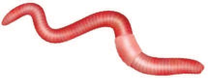
Figure fig_ch01_p018_03 (Page 18)
പര〿ിസര〿പഠനം IV
കു്䵐ിട ആ്䵒ഗᜂ വ㔾ായ⽁ി്䴴ᩤ撘ാ.
കു്䵐ുകൾ ഇാാകു്䵐ുടകാ്䵂് എടᩌ䲎 ᩤ撘ദ☿ാഷ്䴲ു്䵂്?
ആവ㔾ാസ㠿വ㔾യവ㔾്䵝ടയ⽁ ᩤ撘ദ☿ാഷകരമായ⽁ി ബⰾാധിᨪ⪎ു്䵐 മനുഷയ ഇെടപെല㈂ു
കൾ എടᩌ䲎ാമാടണ്䵐് ചᨿർ്䴴ടചᨿടᩓ厚ഴ㐿ുൂ.
കു്䵐ിെിᨪ⪎ൽ
കീെനാ്䵥ിനികുടെ അമിᩤ撘ാപᩤ撘യ⽁ാഗᜂ.
മ⹗ലിനീകര〿ണ⍍ം
മᩆ䚚ിര പൈയ⽁ു്䵐് ്䵦ᩍ䶌ിᨪ⪎ൂ.
‘കർഷകമ⹂ിᩔ呏ം’ എ്䵐ാണ⍍്
ഞ്䴲ല㉆ള㌿ വ㔾ിള㌿ിᨪ⪎ു്䵐ത്.
ഇᩈ䢘ᩔ咋ാൾ മ⹂ിന⠿ീകരണ⍍ം
കാരണ⍍ം മ⹂ᩆ䚌ിൽ
ജ᱀ീവ㔾ിᨪ⪎ാൻ ᩢ抋ാല㉆ത
വ㔾്䵐ിരിᨪ⪎ുകയ⽁ാണ⍍്.
മᩆ䚚ിര പൈയ⽁ു്䵐് ്䵦ᩍ䶌ി്䴴ᩤ撘ാ.
നി്䴲ുടെ വ㔾ീᨾ㺎ില㈂ു പരിസ㠿ര്䵚ᩤ撘ദ☿്䵥്䴲ില㈂ു കാണു്䵐 മാല㈂ിനയ്䴲ൾ
എടᩌ䲎?
നി്䴲ുടെ ᩍ䶏ൂിടല㈂ മാല㈂ിനയനിർᩜ岌ാർജ᱀ന എ്䴲ടനയ⽁ാടണ്䵐ു
കട്䵂ᩈ䢌ി ഒരു ൈിᩤ撘ᩔ咚ാർᨾ㺎് ᩞ庋ാൈാᨪ⪎ി ᩇ䞋ാസ㠿ിൽ അവ㔾രിᩔ咚ിᨪ⪎ൂ.
18
Figure fig_ch01_p019_01 (Page 19) Figure fig_ch01_p019_02 (Page 19) Figure fig_ch01_p019_03 (Page 19) Figure fig_ch01_p019_04 (Page 19) Figure fig_ch01_p019_05 (Page 19) Figure fig_ch01_p019_06 (Page 19) Figure fig_ch01_p019_07 (Page 19) Figure fig_ch01_p019_08 (Page 19)
IV
പര〿ിസര〿പഠനം
ചᨿിᩔ和്䴲ൾ നിര〿ീ്䵌ിᨪ⪎ൂ.
മാല㈂ിനയ്䴲ൾ ചᨿുᩢ抎ുപാെിᩤ撘ല㈂ᨪ⪎് വ㔾ല㈂ിട്䴴ൈിയ⽁ു്䵐് ആവ㔾ാസ㠿്䴲ൾᨪ⪎്
ᩤ撘ദ☿ാഷകരമᩤ撘?
മᩆ䚚ു മല㈂ിനമാᨪ⪎ു്䵐 മᩢ抎ു ്䵚വ㔾ർᩈ䢌ന്䴲ൾ എടᩌ䲎ാടമ്䵐് ചᨿർ്䴴ടചᨿടᩓ厚
ഴ㐿ുൂ.
കᕃഷിയ⽁ിെ്䴲ിൽ അമിമായ⽁ി കീെനാ്䵥ിനി ഉപᩤ撘യ⽁ാഗᜂിᨪ⪎ു്䵐്.
അമിമായ⽁ രാസ㠿വ㔾്䵚ᩤ撘യ⽁ാഗᜂ.
മᩆ䚚ുമല㈂ിനീകരണ ആവ㔾ാസ㠿വ㔾യവ㔾്䵝ടയ⽁ ഏട രീിയ⽁ിൽ ബⰾാധി
ᨪ⪎ു്䵐ു? ചᨿർ്䴴ടചᨿᩓ厚് എᩙ妓 പര〿ിസര〿പഠനപു്䵜കിൽ എഴ㐿ുൂ.
ഇുᩤ撘പാടല㈂ നᩜ岌ുടെ പരിസ㠿രᩈ䢌് മടᩢ抎ടᩌ䲎ാമാണ് മല㈂ിനമാᨪ⪎ടᩔ咚െു്䵐്?
ചᨿിᩔ呏്䴲ൾ നിരീ്䵌ി്䴴് വ㔾ായ⽁ുമല㈂ിനീകരണ സ㠿്䵎ർഭⴾ്䴲ൾ എടᩌ䲎ാടമ്䵐്
കട്䵂ᩈ䢌ൂ.
19
Figure fig_ch01_p021_01 (Page 21) Figure fig_ch01_p021_02 (Page 21) 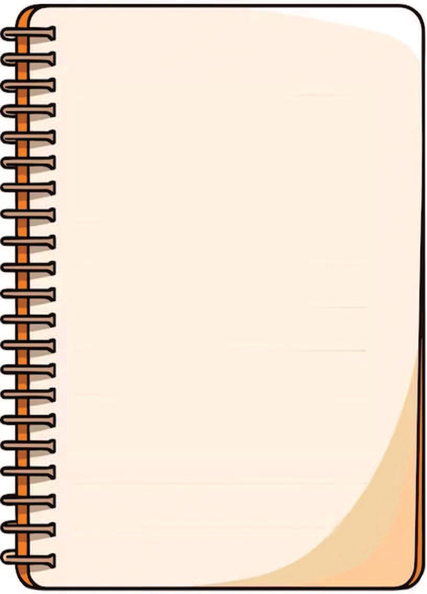
Figure fig_ch01_p021_03 (Page 21) Figure fig_ch01_p021_04 (Page 21) Figure fig_ch01_p021_05 (Page 21)
IV
പര〿ിസര〿പഠനം
ആദ☿ിയ⽁ുടെ ഡയ⽁ൈിᨪ⪎ുൈിᩔ咚് വ㔾ായ⽁ിᨪ⪎.
കിതു്䵦ിയ⽁ ്䵚കᕃതി
30 -07-2024
കു്䵐ിൻല㉆ചരുവ㔾ിായ⽁ിരു്䵐ു ഞ്䴲ള㌿ുല㉆െ വ㔾ീെ്. ന⠿്䵐ായ⽁ി
മ⹂ഴ㐿 കിᨾ㺎ു്䵐 ്䵚ᩈ䢘ദ☿ശമ⹂ാണ⍍് ഞ്䴲ള㌿ുᩈ䢘െത്. ഇെവ㔾ᩔ咋ാതി
ᩈ䢘താരാല㉆ത ല㉆ᩞ庎ു്䵐ുᩂ䊎്. ശ്䴹മ⹂ായ⽁ മ⹂ഴ㐿യ⽁ാണ⍍്. ുഴ㐿യ⽁ിൽ
ജ᱀ന⠿ിരᩔ咋് ഉയ⽁ർ്䵐ിᨾ㺎ുᩂ䊎്. ഇന⠿ിയ⽁ും ജ᱀ന⠿ിരᩔ咋് ഉയ⽁ർ
്䵐ാൽ വ㔾ീᨾ㺎ിൽ ല㉆വ㔾്䵦ം കയ⽁റും. സᩏ侌യയ⽁ായ⽁ᩈ䢘ᩔ咋ാൾ തീ
്䵥മ⹂ായ⽁ മ⹂ഴ㐿 തുെ്䴲ി. ശ㙈വ㔾ദ☿യുതിയ⽁ുമ⹂ി警. മ⹂ഴ㐿 തുെർ്䵐ാൽ
എᩌ䲋് സംഭⵂവ㔾ിᨪ⪎ും എ്䵐് ഞ്䴲ൾᨪ⪎് ഭⵂയ⽁മ⹂ുᩂ䊎ായ⽁ിരു്䵐ു.
അകെമ⹂ു്䵐റിയ⽁ിᩔ咋ുകൾ ഞ്䴲ൾ ്䵦ᩍ䶌ിᨪ⪎ു്䵐ുᩂ䊎ായ⽁ി
രു്䵐ു. വ㔾ീᨾ㺎ില㉆ വ㔾ള㌿ർുമ⹃ഗ്䴲ൾ അസവ്䵝രായ⽁ി ശᩒ剏ം
ഉᩂ䊎ാᨪ⪎ു്䵐ത് ്䵦ᩍ䶌യ⽁ിൽല㉆ᩔ咋ᨾ㺎ു.
അകെം മ⹂ന⠿ᩰ炌ിാᨪ⪎ി അ്䴵ന⠿ും അᩜ岌യ⽁ും ഞ്䴲ല㉆ള㌿
അᩜ屏ം ദ☿ൂല㉆രയ⽁ു്䵦 ബᩏ侌ുവ㔾ില㉆ വ㔾ീᨾ㺎ിᩈ䢘ᨪ⪎് ല㉆കാᩂ䊎ു
ᩈ䢘ായ⽁ി.
മ⹂ഴ㐿❙姧് ശമ⹂ന⠿മ⹂ി警. ഞ്䴲ൾ ഉറᨪ⪎ിായ⽁ി. ുർᨴ㒌യ⽁ാണ⍍്
ല㉆ഞᨾ㺎ിᩔ咋ിᨪ⪎ു്䵐 ആ വ㔾ാർ ഞ്䴲ൾ ᩈ䢘കᨾ㺎ത്. ഉരുൾല㉆ാ
ᨾ㺎ിൽ ന⠿ിരവ㔾ധ✿ി ᩈ䢘ർ മ⹂രണ⍍ല㉆ᩔ咋ᨾ㺎ു. ആ വ㔾ിയ⽁ ്䵚കᕃതി
ദ☿ുരᩌ䲋ില㉆ സംഹ㤾ാരശ്䴹ിയ⽁ിൽ ഞ്䴲ള㌿ുല㉆െ വ㔾ീെും
വ㔾ിദ☿യായ⽁വ㔾ും കുᩈ䢘റ കൂᨾ㺎ുകാരും ബᩏ侌ുᨪ⪎ള㌿ും - ഒരു
ᩇ䞋ാമ⹂ം തല㉆്䵐യ⽁ും ൂർᩆ䚌മ⹂ായ⽁ും ഇ警ാതായ⽁ി.
ആദ☿ിയ⽁ുടെ ഡയ⽁ൈിᨪ⪎ുൈിᩔ咚് വ㔾ായ⽁ി്䴴ᩤ撘ാ.
്䵚കᕃിദ☿ുരᩌ䲎്䴲ൾ ᩤ撘ല㈂ാകᩈ䢌ിട പല㈂ഭⴾാഗᜂᩈ䢌ു ഉ്䵂ാകാൈിᩤ撘?
21
Figure fig_ch01_p022_01 (Page 22) Figure fig_ch01_p022_02 (Page 22) Figure fig_ch01_p022_03 (Page 22) Figure fig_ch01_p022_04 (Page 22) Figure fig_ch01_p022_05 (Page 22)
പര〿ിസര〿പഠനം IV
നി്䴲ൾᨪ⪎ൈിയ⽁ാവ㔾ു്䵐 ്䵚കᕃിദ☿ുരᩌ䲎്䴲ൾ ഏട? കട്䵂ᩈ䢌ിടയ⽁ഴ㐿ുൂ.
ഉരുൾടപാᨾ㺎ൽ
ഭⴾൂക്䵘
കാᨾ㺎ുീ
്䵚കᕃതിദ☿ുര〿驻്䴲ൾ പര〿ിᩝ嶋ിതിᨪ⪎ും ജീവജോല്䴲ൾᨪ⪎ും വലിയ⼿
നോശനᩖ噏മ⹗ു്䵂ോᨪ⪎ു്䵐ു. സവോഭⴾോവികകോര〿ണ⍍്䴲ള㍁ോᩈ䢘ലോ മ⹗നുഷയᩙ妓
ഇടᩙ妓പടൽ വിᩈ䢘യ⼿ോ ്䵚കᕃതിദ☿ുര〿驻മ⹗ു്䵂ോകം.
ᩙ妓കോള㍁ോഷ് വോയ⼿ിᨪ⪎ൂ.
ഈ മു്䵐ൈിയ⽁ിᩔ咚ുകൾ എᩌ䲎ിടനᨪ⪎ുൈി്䴴ു്䵦ാണ്?
ടവ㔾്䵦ടᩔ咚ാᨪ⪎മു്䵐ൈിയ⽁ിᩔ咚് ല㈂ഭⴾി്䴴ാൽ എടᩌ䲎 മുൻകരുല㈂ുകൾ
സ㠿വീകരിᨪ⪎ണ? കൂᨾ㺎ുകാരുമായ⽁ി ചᨿർ്䴴ടചᨿᩓ厚് നി്䴲ുടെ നിർᩤ撘ദ☿്䵥്䴲ൾ
ᩇ䞋ാᩰ炌ിൽ അവ㔾രിᩔ咚ിᨪ⪎ൂ.
22
Figure fig_ch01_p023_01 (Page 23) 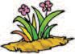
Figure fig_ch01_p023_02 (Page 23) Figure fig_ch01_p023_03 (Page 23) Figure fig_ch01_p023_04 (Page 23)
IV
പര〿ിസര〿പഠനം
്䵚കᕃതിദ☿ുര〿驻്䴲ᩙ妓ള㍁ᨪ⪎ുറി്䴴് മ⹗ു്䵐റിയ⼿ി്䵔ുകൾ നൽകോൻ സംവി
ധ✂ോന്䴲ൾ നിലവിലു്䵂്. മ⹗ു്䵐റിയ⼿ി്䵔ുകള㍁ുᩙ妓ട അടിᩝ嶋ോനിൽ
മ⹗ുൻകര〿ുതലുകൾ എടുോൽ ജീവനും പര〿ിᩝ嶋ിതിᨪ⪎ും സംര〿
്䵌ണ⍍ം നൽകോൻ കിയ⼿ും.
ആവോസവയവᩝ嶋കള㍁ുᩙ妓ട സംര〿്䵌ണ⍍ം
കരയ⽁ില㈂ു കെല㈂ില㈂ുമു്䵦 എᩆ䚚മᩢ抎 ജ᱀ീവ㔾ികൾ... അവ㔾 ്䵚കᕃിᩤ撘യ⽁ാെിണ്䴲ി
ജ᱀ീവ㔾ിᨪ⪎ു്䵐 കാഴ㐿്ചᨿ എᩔ呏 മᩤ撘നാഹ㤂ര! ജ᱀ീവ㔾ികൾ അവ㔾യ⽁ുടെ ഭⴾ്䵌ണവ㔾ു
വ㔾ാസ㠿്䵝ല㈂വ㔾ു കട്䵂ᩈ䢌ു്䵐് ആവ㔾ാസ㠿വ㔾യവ㔾്䵝യ⽁ിൽ നി്䵐ാണ്.
ആവ㔾ാസ㠿വ㔾യവ㔾്䵝കാണ് ജ᱀ീവ㔾ടയ⽁ു റㅈജ᱀വ㔾റㅈവ㔾വ㔾ിധയᩈ䢌ിടയ⽁ു
നില㈂നിᩜ岌ിന് ആധാര. ആവ㔾ാസ㠿വ㔾യവ㔾്䵝കുടെ സ㠿ര്䵌ണ നᩜ岌ുടെ
കെമയ⽁ാണ്.
ആവ㔾ാസ㠿വ㔾യവ㔾്䵝യ⽁ുടെ സ㠿ര്䵌ണ്䵚വ㔾ർᩈ䢌ന്䴲ിൽ നമുᨪ⪎ു പᨮ⺎ു
ᩤ撘ചᨿര.
ന⠿ᩜ岌ുല㉆െ ഭⵂൂമ⹂ി. ന⠿ᩜ岌ുല㉆െ ഭⵂാവ㔾ി.
ന⠿ തല㉆്䵐 സംരᩌ䲌കർ.
ാിᨪ⪎, ന⠿മ⹂ുᨪ⪎്
ഹ㤾രിത ചᨾ㺎്䴲ൾ.
വിലയ⼿ിര〿ും
1.
ജ᱀ീവ㔾ികട അവ㔾യ⽁ുടെ ആവ㔾ാസ㠿വ㔾ുമായ⽁ി ബⰾᩏ侌ിᩔ咚ിᨪ⪎ുക.
ജീവി
ിമിഗᜂില㈂
ആവോസം
വ㔾ന
ടപൻഗᜂവിൻ
സ㠿മുᩖ噏
പു്䵦ിമാൻ
മരുഭⴾൂമി
ഒᨾ㺎ക
ᩗ垎ുവ㔾്䵚ᩤ撘ദ☿്䵥
23
Figure fig_ch01_p024_01 (Page 24) Figure fig_ch01_p024_02 (Page 24) 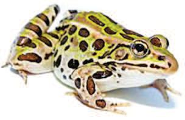
Figure fig_ch01_p024_03 (Page 24) 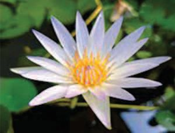
Figure fig_ch01_p024_04 (Page 24) 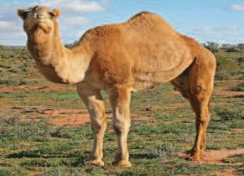
Figure fig_ch01_p024_05 (Page 24) 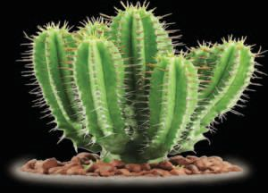
Figure fig_ch01_p024_06 (Page 24) 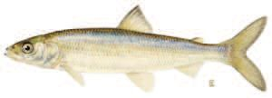
Figure fig_ch01_p024_07 (Page 24)
പര〿ിസര〿പഠനം IV
2.
നി്䴲ുടെ ്䵚ᩤ撘ദ☿്䵥ടᩈ䢌 ഒരു ആവ㔾ാസ㠿വ㔾യവ㔾്䵝 സ㠿്䵎ർ്䵥ി്䴴് അവ㔾ിടെ
കാണടᩔ咚െു്䵐 ജ᱀ീവ㔾ികുടെ ᩤ撘പടരഴ㐿ുുക. അവ㔾യ⽁ുടെ പര്䵢രാ്䵦
യ⽁വ കട്䵂ᩈ䢌ൂ.
3.
ാടഴ㐿 കാണു്䵐 ജ᱀ീവ㔾ികട അവ㔾യ⽁ുടെ അനുകൂല㈂നവ㔾ുമായ⽁ി വ㔾ര്䴴്
ᩤ撘യ⽁ാജ᱀ിᩔ咚ിᨪ⪎ൂ.
ടചᨿകിᩔ咚ൂᨪ⪎ുടെ സ㠿ഹ㤂ായ⽁ᩤ撘ᩈ䢌ാടെ
്䵥വസ㠿ിᨪ⪎ു്䵐ു.
ഇല㈂കൾᨪ⪎് ടമഴ㐿ുകുᩤ撘പാല㈂ു്䵦
വ㔾്䵜ുവ㔾ിട ആവ㔾രണമു്䵂്.
വᨪ⪎ില㈂ൂടെ ്䵥വസ㠿ന നെᩈ䢌ു്䵐ു.
കാ്䵄ᩈ䢌ിൽ (്䵂ിൽ) ജ᱀ല㈂
ᩤ撘്䵥ഖരി്䴴ുവ㔾❙姛ാൻ കഴ㐿ിയ⽁ു്䵐ു.
മണല㈂ിൽ പുᨼ㲎ുᩤ撘പാകാᩈ䢌
പര്䵐 പാദ☿്䴲ൾ ഉ്䵂്.
24
Figure fig_ch01_p025_01 (Page 25) 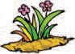
Figure fig_ch01_p025_02 (Page 25)
IV
പര〿ിസര〿പഠനം
തുടർ്䵚വർനം
അയ⼾ൽപᨪ⪎ᩙ妓ᩈ䢌 5 വ㔿ീടുകൾ സ㠿്䵎ർശ㘾ി്䴴് ത⑇ദ☿യവ㔿ലി ഉപത⑇യ⼾ഗി്䴴്
അഭⴿിമ⹂ുഖം ന⠾ടᩈ䢌ി, സ㠿ാ驻ം വ㔿ീᨾ㺎ിᩙ妓ല വ㔿ിവ㔿ര〿്䴲ള㌿ും അത⑇ന⠾ാഷ㜂ി്䴴റㄾിᨼ㲎്
ᩇ䞏ൂᩔ和യ⼾ി ഒര〿ു റㄾിത⑇ᩔ和ർᨾ㺎് ᩞ庋റㄾᨪ⪎ി ്䵇സ㠿ിൽ അവ㔿ര〿ിᩔ和ിᨪ⪎ുക.
1.
അഭⴾിമ⹗ുഖᩈ䢘ചᨿോദ☿യോവലി
വ㔿ീᨾ㺎ുത⑇പര〿്/ന⠾ᩘ墋ർ :
സ㠿്䵎ർശ㘾ി്䴴 ീയ⼾ി, സ㠿മ⹂യ⼾ം :
വ㔿ീᨾ㺎ുടമ⹂യ⼾ുᩙ妓ട ത⑇പര〿് :
ᩅ䕏മ⹗
നᩘ墚ർ
ഇന്䴲ൾ
സം്䵍ര〿ിᨪ⪎ു്䵐 ര〿ീതി
1
ല㉈ജവ㔿മ⹂ലിന⠾യം
y പറㄾᩘ墋ിൽ കുഴ㐿ി്䴴ിടു്䵐ു
y ത⑇റㄾഡിത⑇ലᨪ⪎് വ㔿ലിᩙ妓്䴴റㄾിയ⼾ു്䵐ു
y ല㉈പᩔ和് കത⑇ᩘ墋➚髧ിൽ ന⠾ിത⑇ᩌ䲌പിᨪ⪎ു്䵐ു
y കത⑇ᩘ墋➚髧് പിᩢ抌ിൽ ന⠾ിത⑇ᩌ䲌പിᨪ⪎ു്䵐ു
y ബത⑇യ⼾ബി്䵐ിൽ ഇടു്䵐ു
y ബത⑇യ⼾ഗയസ㠿് ᩜ岋ിൽ ന⠾ിത⑇ᩌ䲌പിᨪ⪎ു്䵐ു
y ജ驻ുᨪ⪎ൾᨪ⪎് ന⠾ൽകു്䵐ു
y മ⹂ᩙ妓ᩢ抌ᩙ妓驻്䴮ിലും........................................
2
ᩜ岋➚髧ിക് മ⹂ലിന⠾യം y ്䵨ര〿ികർᩜ岎ത⑇സ㠿ന⠾驙് ᩙ妓കടുᨪ⪎ു്䵐ു
y മ⹂ᩆ䚏ിൽ കുഴ㐿ി്䴴ിടു്䵐ു
y സ㠿സ㠿യ്䴲ൾ ന⠾ടൻ ഉപത⑇യ⼾ഗിᨪ⪎ു്䵐ു
y അല്䴮ര〿 വ㔿്䵜ുᨪ⪎ള㌿ുᩂ䊚ᨪ⪎ു്䵐ു
y പര〿ിസ㠿ര〿ᩈ䢌് വ㔿ലിᩙ妓്䴴റㄾിയ⼾ു്䵐ു
y ജലശ㘾യ⼾്䴲ലിത⑇ലᨪ⪎് വ㔿ലിᩙ妓്䴴റㄾിയ⼾ു്䵐ു
y ീ കᩈ䢌ിᨪ⪎ു്䵐ു
y മ⹂ᩙ妓ᩢ抌ᩙ妓驻്䴮ിലും ........................................
ജലമ⹂ലിന⠾യം
y പറㄾᩘ墋ിᩙ妓ല കᕃഷ㜂ി驙് ഉപത⑇യ⼾ഗിᨪ⪎ു്䵐ു
y ത⑇സ㠿ᨪ⪎് പിᩢ抌ിത⑇ലᨪ⪎് ഒഴ㐿ുᨪ⪎ു്䵐ു
y ഓടയ⼾ിത⑇ലᨪ⪎് ഒഴ㐿ുᨪ⪎ു്䵐ു
y ജലശ㘾യ⼾്䴲ള㌿ിത⑇ലᨪ⪎് ഒഴ㐿ുᨪ⪎ു്䵐ു
y മ⹂ᩙ妓ᩢ抌ᩙ妓驻്䴮ിലും ........................................
3
2.
കര〿യ⼾ിലും ജലᩈ䢌ിലും ജീവ㔿ിᨪ⪎ു്䵐 ജീവ㔿ികള㌿ുᩙ妓ട ി്䵔്䴲ൾ ത⑇ശ㘾ഖ
ര〿ി്䴴് ഒര〿ു ഡിജിᩢ抌ൽ ആൽബം ᩞ庋റㄾᨪ⪎ൂ.
25